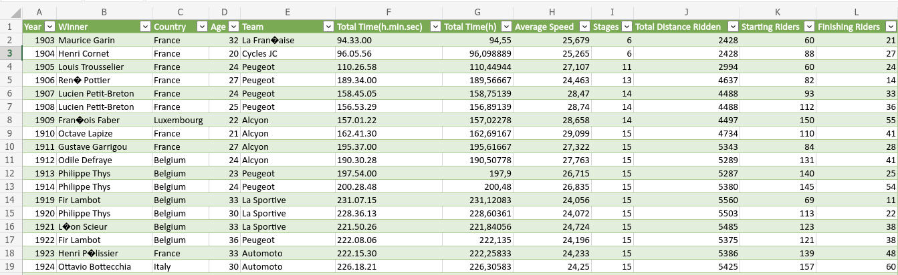
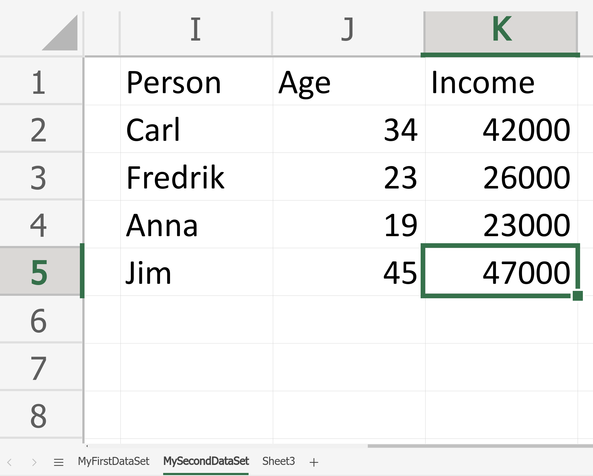
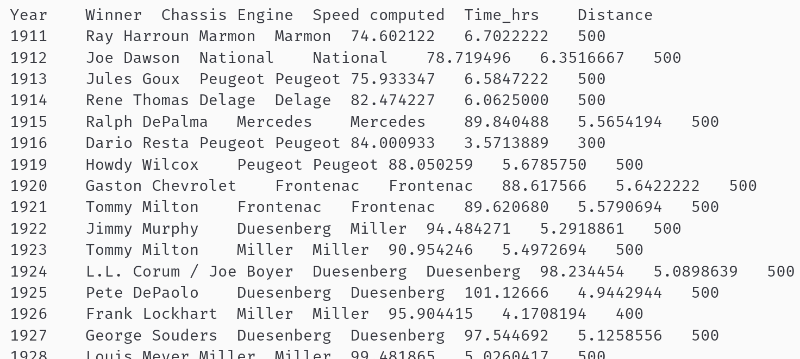

#install.packages("openxlsx") # Installs the openxlsx package. Do it only once.
library("openxlsx") # loads the openxlsx package. Do it once per R session.Warning: package 'openxlsx' was built under R version 4.2.2Mattias Villani
Data often come in the form of Excel files, usually named SomeData.xls or SomeData.xlsx, where SomeData is the name that you or someone else have given to the file. Excel stores data as tables with rows and columns, like this:

Excel files may contain more than one dataset, organized as Excel sheets. Here is an example (note the multiple sheets at the bottom):

There are many R packages for reading data from Excel. We will be using the openxlsx package here. This installs and loads the openxlsx package:
#install.packages("openxlsx") # Installs the openxlsx package. Do it only once.
library("openxlsx") # loads the openxlsx package. Do it once per R session.Warning: package 'openxlsx' was built under R version 4.2.2I have commented out the installation of the package by putting a # sign in front of the command install.packages("openxlsx"). So this command will not be executed/run. I already have that package installed on my computer and don’t want to re-install it. You have to uncomment, that is remove the sign #, before running this on your computer, if you haven’t installed this package already.
The argument sheet=1 tells R to read data from the first sheet in the Excel file. If you want to the read data from the third sheet in an Excel file, then just replace 1 with 3 (the Tour de France data has only one sheet, however).
I placed the file Tour_de_France_2017.xlsx in my working directory. If the file with data is at a different place on your computer then you need to include the search path to the file before the file name. For example, on a computer running Windows, if your data is stored in the Documents folder, then replace the command above with
tour_de_france <- read_excel('C:\Documents\Tour_de_France_2017.xlsx', sheet = 1)
Rather than telling R explicitly where your data are stored, you can also use the command
tour_de_france <- read.xlsx(file.choose(), sheet = 1)
which will open up a window where you can look up the file in your file explorer and it will then read the first sheet (again the 1 in the command) of that file. This is convenient, but I don’t recommend it (lousy tip! 🙄) since you then have to click your way to the file everytime you re-run your R code.
We have now read the dataset into a variable that I have chosen to call tour_de_france. We can now just type the name of this variable in the Console in R to see the data.
Year Winner Country Age Team
1 1903 Maurice Garin France 32 La Fran<U+FFFD>aise
2 1904 Henri Cornet France 20 Cycles JC
3 1905 Louis Trousselier France 24 Peugeot
4 1906 Ren<U+FFFD> Pottier France 27 Peugeot
5 1907 Lucien Petit-Breton France 24 Peugeot
6 1908 Lucien Petit-Breton France 25 Peugeot
7 1909 Fran<U+FFFD>ois Faber Luxembourg 22 Alcyon
8 1910 Octave Lapize France 21 Alcyon
9 1911 Gustave Garrigou France 27 Alcyon
10 1912 Odile Defraye Belgium 24 Alcyon
11 1913 Philippe Thys Belgium 23 Peugeot
12 1914 Philippe Thys Belgium 24 Peugeot
13 1919 Fir Lambot Belgium 33 La Sportive
14 1920 Philippe Thys Belgium 30 La Sportive
15 1921 L<U+FFFD>on Scieur Belgium 33 La Sportive
16 1922 Fir Lambot Belgium 36 Peugeot
17 1923 Henri P<U+FFFD>lissier France 33 Automoto
18 1924 Ottavio Bottecchia Italy 30 Automoto
19 1925 Ottavio Bottecchia Italy 31 Automoto
20 1926 Lucien Buysse Belgium 34 Automoto
21 1927 Nicolas Frantz Luxembourg 28 Alcyon
22 1928 Nicolas Frantz Luxembourg 29 Alcyon
23 1929 Maurice De Walel Belgium 33 Alcyon
24 1930 Andr<U+FFFD> Leducq France 26 France
25 1931 Antonin Magne France 27 France
26 1932 Andr<U+FFFD> Leducq France 28 France
27 1933 Georges Speicher France 26 France
28 1934 Antonin Magne France 30 France
29 1935 Romain Maes Belgium 22 Belgium
30 1936 Silv<U+FFFD>re Maes Belgium 27 Belgium
31 1937 Roger Lap<U+FFFD>bie France 26 France
32 1938 Gino Bartali Italy 24 Italy
33 1939 Silv<U+FFFD>re Maes Belgium 30 Belgium
34 1947 Jean Robic France 26 Ouest
35 1948 Gino Bartali Italy 34 Italy
36 1949 Fausto Coppi Italy 30 Italy
37 1950 Ferdy K<U+FFFD>bler Switzerland 31 Switzerland
38 1951 Hugo Koblet Switzerland 26 Switzerland
39 1952 Fausto Coppi Italy 33 Italy
40 1953 Louison Bobet France 28 France
41 1954 Louison Bobet France 29 France
42 1955 Louison Bobet France 30 France
43 1956 Roger Walkowiak France 29 Nord-Est- Centre
44 1957 Jacques Anquetil France 23 France
45 1958 Charly Gaul Luxembourg 26 Holland- Luxembourg
46 1959 Federico Bahamontes Spain 31 Spain
47 1960 Gastone Nencini Italy 30 Italy
48 1961 Jacques Anquetil France 27 France
49 1962 Jacques Anquetil France 28 St-Rapha<U+FFFD>l
50 1963 Jacques Anquetil France 29 St-Rapha<U+FFFD>l
51 1964 Jacques Anquetil France 30 St-Rapha<U+FFFD>l
52 1965 Felice Gimondi Italy 23 Salvarini
53 1966 Lucien Aimar France 25 Ford
54 1967 Roger Pingeon France 27 France
55 1968 Jan Janssen Netherlands 28 Holland
56 1969 Eddy Merckx Belgium 24 Faema
57 1970 Eddy Merckx Belgium 25 Faeo
58 1971 Eddy Merckx Belgium 26 Molteni
59 1972 Eddy Merckx Belgium 27 Molteni
60 1973 Luis Oca<U+FFFD>a Spain 28 Bic
61 1974 Eddy Merckx Belgium 29 Molteni
62 1975 Bernard Th<U+FFFD>venet France 27 Peugeot
63 1976 Lucien van Impe Belgium 30 Gitane
64 1977 Bernard Th<U+FFFD>venet France 29 Peugeot
65 1978 Bernard Hinault France 24 Renault
66 1979 Bernard Hinault France 25 Renault
67 1980 Joop Zoetemelk Netherlands 34 TI-Raleigh
68 1981 Bernard Hinault France 27 Renault
69 1982 Bernard Hinault France 28 Renault
70 1983 Laurent Fignon France 23 Renault
71 1984 Laurent Fignon France 24 Renault
72 1985 Bernard Hinault France 31 La Vie Claire
73 1986 Greg LeMond USA 25 La Vie Claire
74 1987 Stephen Roche Ireland 28 Carrera
75 1988 Pedro Delgado Spain 28 Reynolds
76 1989 Greg LeMond USA 28 ADR
77 1990 Greg LeMond USA 29 Z
78 1991 Miguel Indur<U+FFFD>in Spain 27 Banesto
79 1992 Miguel Indur<U+FFFD>in Spain 28 Banesto
80 1993 Miguel Indur<U+FFFD>in Spain 29 Banesto
81 1994 Miguel Indur<U+FFFD>in Spain 30 Banesto
82 1995 Miguel Indur<U+FFFD>in Spain 31 Banesto
83 1996 Bjarne Riis Denmark 32 Deutsche Telekom
84 1997 Jan Ullrich Germany 24 Telekom
85 1998 Marco Pantani Italy 28 Mercatone Uno
86 1999 Lance Armstrong USA 28 US Postal
87 2000 Lance Armstrong USA 29 US Postal
88 2001 Lance Armstrong USA 30 US Postal
89 2002 Lance Armstrong USA 31 US Postal
90 2003 Lance Armstrong USA 32 US Postal
91 2004 Lance Armstrong USA 33 US Postal
92 2005 Lance Armstrong USA 34 Discovery
93 2006 Pereiro Oscar Spain 30 Caisse d'Epargne
94 2007 Contador Alberto Spain 24 Discovery
95 2008 Sastre Carlos Spain 33 CSC-Saxo Bank
96 2009 Contador Alberto Spain 26 Astana
97 2010 Andy Schleck Luxembourg 25 Saxo Bank
98 2011 Cadel Evans Australia 34 BMC
99 2012 Bradley Wiggins Great Britain 32 Sky
100 2013 Christopher Froome Great Britain 28 Sky
101 2014 Vincezo Nibali Italy 29 Astana
102 2015 Cristopher Froome Great Britain 30 Sky
103 2016 Cristopher Froome Great Britain 31 Sky
104 2017 Cristopher Froome Great Britain 32 Sky
Total.Time(h.min.sec) Total.Time(h) Average.Speed Stages
1 94.33.00 94.55000 25.679 6
2 96.05.56 96.09889 25.265 6
3 110.26.58 110.44944 27.107 11
4 189.34.00 189.56667 24.463 13
5 158.45.05 158.75139 28.470 14
6 156.53.29 156.89139 28.740 14
7 157.01.22 157.02278 28.658 14
8 162.41.30 162.69167 29.099 15
9 195.37.00 195.61667 27.322 15
10 190.30.28 190.50778 27.763 15
11 197.54.00 197.90000 26.715 15
12 200.28.48 200.48000 26.835 15
13 231.07.15 231.12083 24.056 15
14 228.36.13 228.60361 24.072 15
15 221.50.26 221.84056 24.724 15
16 222.08.06 222.13500 24.196 15
17 222.15.30 222.25833 24.233 15
18 226.18.21 226.30583 24.250 15
19 219.10.18 219.17167 24.820 18
20 238.44.25 238.74028 24.273 17
21 198.16.42 198.27833 27.224 24
22 192.48.58 192.81611 28.400 22
23 186.39.16 186.65444 28.319 22
24 172.12.16 172.20444 28.000 21
25 177.10.03 177.16750 28.735 24
26 154.12.59 154.21639 29.047 21
27 147.51.37 147.86028 29.818 23
28 147.13.58 147.23278 30.360 23
29 141.23.00 141.38333 30.650 21
30 142.47.32 142.79222 31.108 21
31 138.58.31 138.97528 31.768 20
32 148.29.12 148.48667 31.565 21
33 132.03.17 132.05472 31.986 18
34 148.11.25 148.19028 31.412 21
35 147.10.36 147.17667 33.442 21
36 149.40.49 149.68028 32.121 21
37 145.36.46 145.61278 32.778 22
38 142.20.14 142.33722 32.949 24
39 151.57.20 151.95556 32.233 23
40 129.23.25 129.39028 34.593 22
41 140.06.05 140.10139 33.229 23
42 130.29.26 130.49056 34.446 22
43 124.01.16 124.02111 36.268 22
44 135.44.42 135.74500 34.520 22
45 116.59.05 116.98472 36.919 24
46 123.46.45 123.77917 35.474 22
47 112.08.42 112.14500 37.210 22
48 122.01.33 122.02583 36.033 21
49 114.31.45 114.52917 37.317 22
50 113.30.05 113.50139 37.092 21
51 127.09.44 127.16222 35.419 22
52 116.42.06 116.70167 35.886 22
53 117.34.21 117.57250 36.760 22
54 136.53.50 136.89722 34.756 22
55 133.49.32 133.82556 33.556 22
56 116.16.02 116.26722 35.409 22
57 119.31.49 119.53028 35.589 23
58 96.45.14 96.75389 38.084 20
59 108.17.18 108.28833 35.514 20
60 122.25.34 122.42611 33.407 20
61 116.16.58 116.28278 35.241 22
62 114.35.31 114.59194 34.906 22
63 116.22.23 116.37306 34.518 22
64 115.38.30 115.64167 35.419 22
65 108.18.00 108.30000 36.084 22
66 103.06.50 103.11389 36.513 24
67 109.19.14 109.32056 35.144 22
68 96.19.38 96.32722 38.960 24
69 92.08.46 92.14611 38.059 21
70 105.07.52 105.13111 36.230 22
71 112.03.40 112.06111 35.882 23
72 113.24.23 113.40639 36.232 22
73 110.35.19 110.58861 37.020 23
74 115.27.42 115.46167 36.645 25
75 84.27.53 84.46472 38.909 22
76 87.38.35 87.64306 37.487 21
77 90.43.20 90.72222 38.621 21
78 101.01.20 101.02222 38.747 22
79 100.49.30 100.82500 39.504 21
80 95.57.09 95.95250 38.709 20
81 103.38.38 103.64389 38.383 21
82 92.44.59 92.74972 39.193 20
83 95.57.16 95.95444 39.227 21
84 100.30.35 100.50972 39.237 21
85 92.49.46 92.82944 39.983 21
86 91.32.16 91.53778 40.276 20
87 92.33.08 92.55222 39.569 21
88 86.17.28 86.29111 40.070 20
89 82.05.12 82.08667 39.920 20
90 83.41.12 83.68667 40.940 20
91 83.36.02 83.60056 40.553 20
92 86.15.02 86.25056 41.654 21
93 89.39.30 89.65833 40.784 21
94 91.00.26 91.00722 39.228 21
95 87.52.52 87.88111 40.492 21
96 85.48.35 85.80972 40.315 21
97 91.58.48 91.98000 39.594 20
98 86.12.22 86.20611 39.788 21
99 87.34.47 87.57972 39.883 20
100 94.33.00 94.55000 40.550 21
101 89.56.06 89.93433 40.735 21
102 84.46.14 84.76900 39.640 21
103 89.04.48 89.08000 39.620 21
104 86.20.55 86.34000 40.997 21
Total.Distance.Ridden Starting.Riders Finishing.Riders
1 2428.0 60 21
2 2428.0 88 27
3 2994.0 60 24
4 4637.0 82 14
5 4488.0 93 33
6 4488.0 112 36
7 4497.0 150 55
8 4734.0 110 41
9 5343.0 84 28
10 5289.0 131 41
11 5287.0 140 25
12 5380.0 145 54
13 5560.0 69 11
14 5503.0 113 22
15 5485.0 123 38
16 5375.0 121 38
17 5386.0 139 48
18 5425.0 157 60
19 5440.0 130 49
20 5745.0 126 41
21 5398.0 142 39
22 5476.0 162 41
23 5286.0 155 60
24 4822.0 100 59
25 5091.0 81 35
26 4479.0 80 57
27 4395.0 80 40
28 4470.0 60 39
29 4338.0 93 46
30 4442.0 90 43
31 4415.0 98 46
32 4694.0 96 55
33 4224.0 79 49
34 4642.0 100 53
35 4922.0 120 44
36 4808.0 120 55
37 4773.0 116 51
38 4690.0 123 66
39 4898.0 122 78
40 4476.0 119 76
41 4656.0 110 69
42 4495.0 130 69
43 4498.0 120 88
44 4669.0 120 56
45 4319.0 120 78
46 4358.0 120 65
47 4173.0 128 81
48 4397.0 132 72
49 4274.0 149 94
50 4138.0 130 76
51 4504.0 132 81
52 4188.0 130 96
53 4329.0 130 82
54 4779.0 130 88
55 4492.0 110 63
56 4117.0 130 86
57 4254.0 150 100
58 3608.0 130 94
59 3846.0 132 88
60 4090.0 132 87
61 4098.0 130 105
62 4000.0 140 86
63 4017.0 130 87
64 4096.0 100 53
65 3908.0 110 78
66 3765.0 150 90
67 3842.0 130 85
68 3753.0 150 121
69 3507.0 169 125
70 3809.0 140 88
71 4021.0 170 124
72 4109.0 180 144
73 4094.0 210 132
74 4231.0 207 135
75 3286.0 198 151
76 3285.0 198 138
77 3504.0 198 156
78 3914.0 198 158
79 3983.0 198 130
80 3714.0 180 136
81 3978.0 189 117
82 3635.0 189 115
83 3765.0 198 129
84 3950.0 198 139
85 3875.0 189 96
86 3870.0 180 141
87 3662.0 177 128
88 3458.0 189 144
89 3278.0 189 153
90 3427.0 198 147
91 3391.0 188 147
92 3593.0 189 155
93 3657.0 176 139
94 3570.0 189 141
95 3559.0 180 145
96 3459.5 180 156
97 3642.0 198 170
98 3630.0 198 167
99 3497.0 198 153
100 3404.0 198 169
101 3663.5 198 164
102 3360.3 198 160
103 3529.0 198 174
104 3540.0 198 167Note that some accented letters like é were replaced by a question mark. The variable tour_de_france is a table of a specific type called dataframe, which is R’s main way of storing a table.
To get a quick look at the data, the head command is useful, showing only the first few observations of the dataset:
Year Winner Country Age Team
1 1903 Maurice Garin France 32 La Fran<U+FFFD>aise
2 1904 Henri Cornet France 20 Cycles JC
3 1905 Louis Trousselier France 24 Peugeot
4 1906 Ren<U+FFFD> Pottier France 27 Peugeot
5 1907 Lucien Petit-Breton France 24 Peugeot
6 1908 Lucien Petit-Breton France 25 Peugeot
Total.Time(h.min.sec) Total.Time(h) Average.Speed Stages
1 94.33.00 94.55000 25.679 6
2 96.05.56 96.09889 25.265 6
3 110.26.58 110.44944 27.107 11
4 189.34.00 189.56667 24.463 13
5 158.45.05 158.75139 28.470 14
6 156.53.29 156.89139 28.740 14
Total.Distance.Ridden Starting.Riders Finishing.Riders
1 2428 60 21
2 2428 88 27
3 2994 60 24
4 4637 82 14
5 4488 93 33
6 4488 112 36You can now start analyzing the data in different ways, perhaps plotting the average speed variable over the year that Tour de France has run:
The average speed has increased over the year. Notable exceptions are the years during following the first world war.
Data may also come as a pure text file, often with the file ending .txt. Such files contain a simple table with the data. The first row may or may not contain the names of the variables in the columns. The columns are separated by a separator, typically a comma (,) or a TAB (blank space of a certain width). Here is an example with data from Indy car drivers:

Note how the columns are not nice aligned, but clearly separated by blank space (TAB) so that R can understand which numbers belongs to which variable (column). Note also that the first row contain the variable names: Year, Winner, Chassis, Engine, Speed, Time_hrs and Distance.
Let’s read this text file with data into R using the built-in function read.delim
Year Winner Chassis Engine Speed.computed Time_hrs Distance
1 1911 Ray Harroun Marmon Marmon 74.60212 6.702222 500
2 1912 Joe Dawson National National 78.71950 6.351667 500
3 1913 Jules Goux Peugeot Peugeot 75.93335 6.584722 500
4 1914 Rene Thomas Delage Delage 82.47423 6.062500 500
5 1915 Ralph DePalma Mercedes Mercedes 89.84049 5.565419 500
6 1916 Dario Resta Peugeot Peugeot 84.00093 3.571389 300where the argument header = TRUE tells R that the first row in the dataset contains the names of the variables in the data.
Finally, a very common file format is csv , which stands for comma-separated values. These are similar to txt files, but are read into R using the built-in read.csv function.
Both the read.delim and read.csv have an argument sep that can be used to specify which delimiter is used in the file. For example, a txt files where the columns are separated by a comma instead of TAB can be read by the command:
my_data <- read.delim('myfile.txt', sep = ",", header = TRUE)